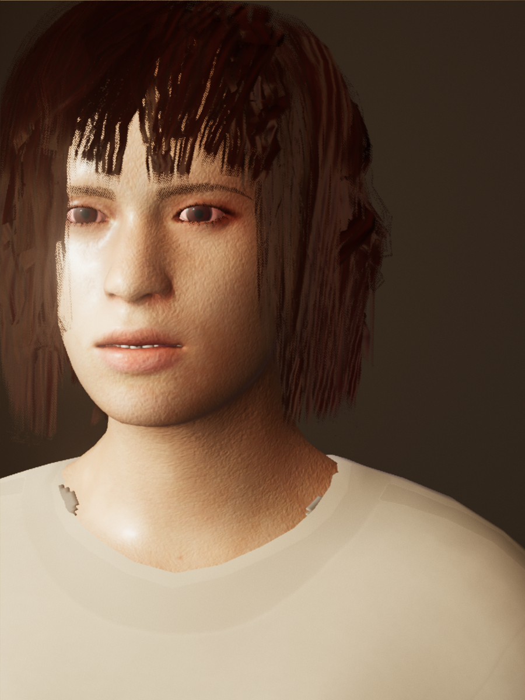
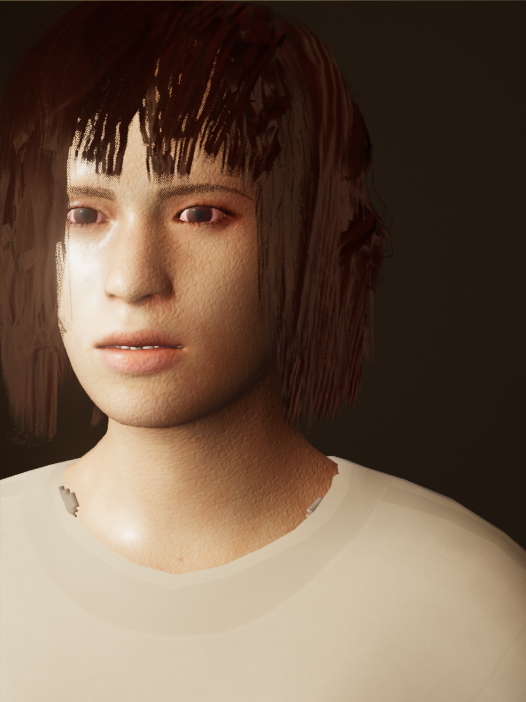
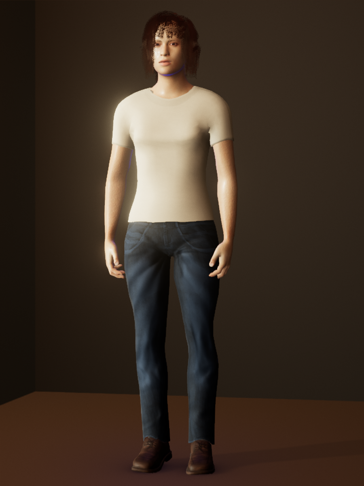
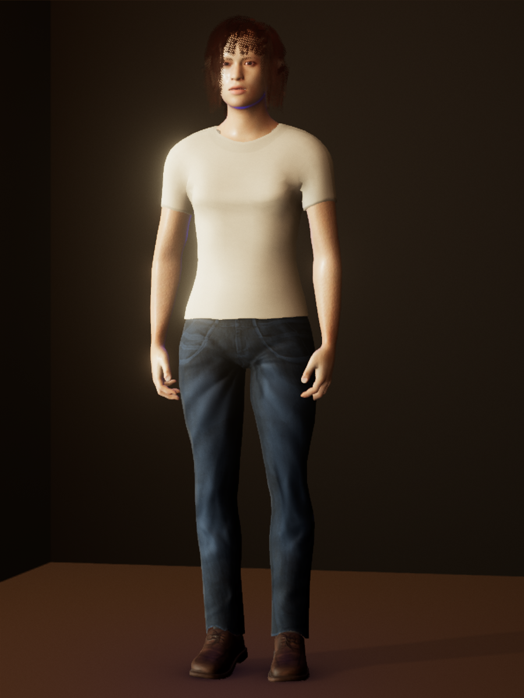
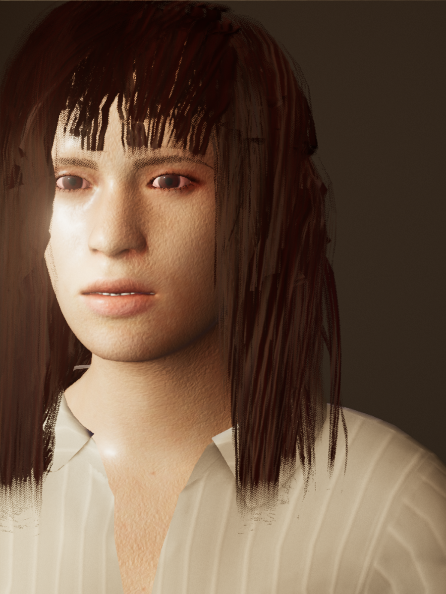
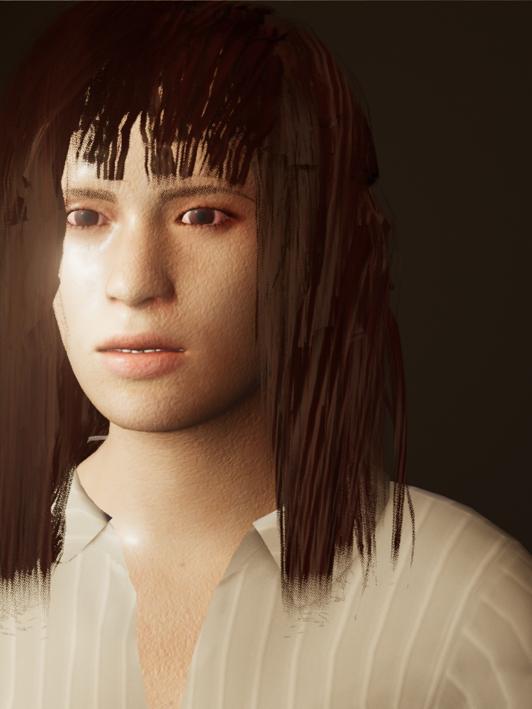
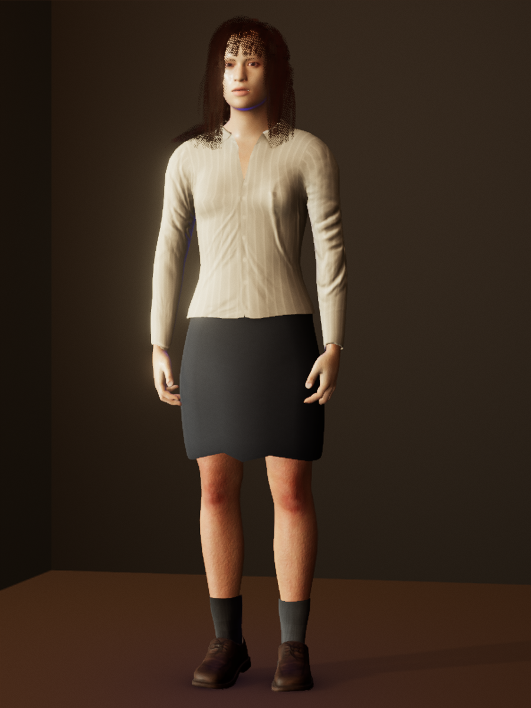
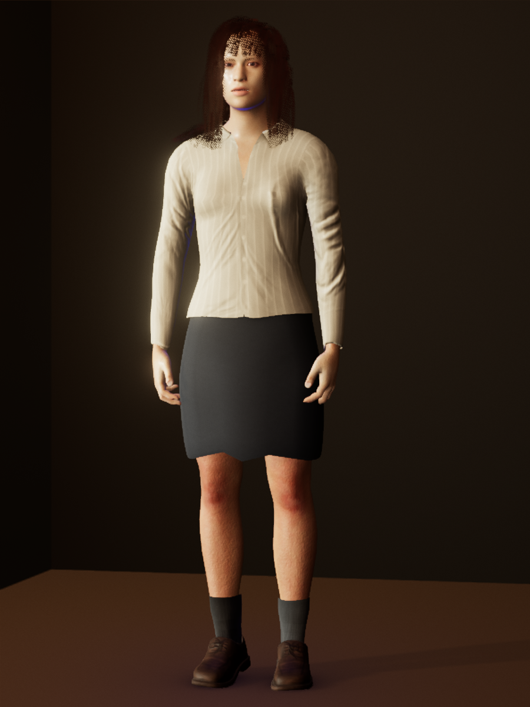

September 26 · scene review
The revised warm plaster makes the shaded face and neck easier to distinguish while retaining the room’s depth. Dark clothes have less contrast than before, but remain readable in these reviewed looks. These are matched native renders of the existing outfits.








The actual wall material and its baked room illumination change together. Five existing bald-portrait readability checks pass. A separate critic reviewed both complete outfits, and the actual default was rendered again. Studio lighting remains unchanged.
These fixed views do not establish motion, garment fit, emotion recognition or overall AAA quality. Hair was left unchanged and its outstanding issues remain deferred.
Independent review · Portrait measurements · Actual default renders